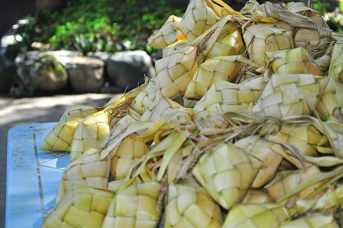
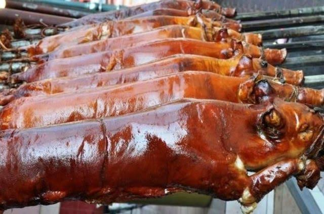

Foods
These are some food delicacies that we can eat in cebu

Puso Rice

more commonly known as “hanging rice”, this rice is boiled and wrapped in coconut leaves, in local eateries you will most likely notice them hanging in the batches.
Lechon Cebu

BCebu claims to have the "best-roasted pork" in the Philippines, offering up Lechon as proof. This dish is quite the local trademark for Cebuanos.
Pochero

Coming from the Spanish word which means “stew pot”, Pochero is another dish that you should watch out for in Cebu, especially during the rainy season.